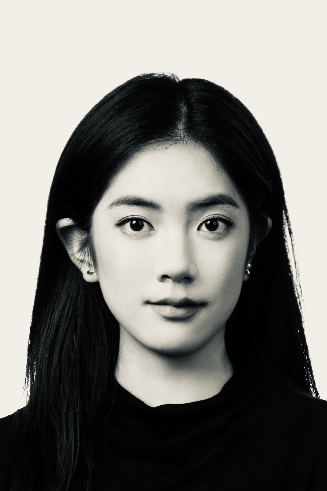

Moodlog

Creative technologist
Sound artist
HCI researcher
Yixuan Jin works across interactive sound, music technology, accessibility, and human computer interaction.
Yixuan
Jin
01
YJ
01 — Bio
Yixuan Jin is a second-year master student in Media Arts at the University of Michigan, where she also works as a graduate student research assistant. Her research interests include interactive music, accessible musical instruments, and tangible interaction. Her creative work has been presented at NIME 2025, ICMC 2024 and 2025, MUSICACOUSTICA 2024, and NYCEMF 2024.
Tarot · crystal · hiking · travel
Work
2024—26Echoes of Nature’s Heritage
TAMIE / Trainable Accessible Musical Instruments
EchoStrike: Spatial Audio Motion Game
Vibrasling
The Dew Waker
Enter a project to reveal its coverClick a project to enter ↘
02 — About
My practice moves between making and studying. I am interested in how bodies, ears, and materials shape creative agency.
03 — Contact